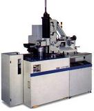

Single Crystal
Growing for Wafer Production
Integrated circuits are
built on
single-crystal silicon
substrates that possess a high level of
purity
and perfection.
Single-crystal silicon is used in VLSI fabrication instead of
polycrystalline silicon since the former does not have
defects
associated with grain boundaries found in polysilicon. Such defects have
been known to limit the lifetimes of minority carriers.
Aside from the need to
be single-crystalline in nature, silicon substrates must also have a
high degree of chemical purity, a high degree of crystalline perfection,
and high structure uniformity. The acquisition of such high-grade
starting silicon material involves two major steps: 1) refinement of raw
material (such as quartzite, a type of sand) into
electronic grade
polycrystalline silicon (EGS)
using a complex multi-stage
process; and 2) growing of single-crystal silicon from this EGS either
by Czochralski or Float Zone process.
Czochralski Crystal
Growth
Czochralski (CZ) crystal
growth, so named in
honor of its inventor, involves the crystalline solidification of atoms
from a liquid phase at an interface. The basic CZ crystal growing
process is more or less still the same as what has been developed in the
1950's.
CZ crystal growing consists
of the following steps.
1) A fused silica
crucible
is
loaded with a charge of undoped EGS
together with a precise amount of diluted silicon alloy.
2) The
gases
inside the growth chamber are then
evacuated.
3) The growth chamber is
then
back-filled
with an
inert gas
to inhibit the entrance of atmospheric gases into the melt during
crystal growing.
4) The silicon charge
inside the chamber is then
melted (Si melting point = 1421 deg C).
5) A slim
seed
of
crystal silicon (5 mm dia. and 100-300 mm long) with precise
orientation
tolerances is introduced into the molten silicon.
6) The seed crystal is
then
withdrawn
at a very
controlled
rate. The seed crystal and the crucible are rotated in opposite
directions while this withdrawal process occurs.
|
|
|
Fig. 1.
Examples of Czochralski Pullers
|
Float Zone Crystal
Growth
The
float
zone (FZ) process is another method for growing single-crystal silicon.
It involves the passing of a
molten zone through a polysilicon rod that
approximately has the same dimensions as the final ingot. The
purity of an ingot produced by the FZ process is higher than that of an
ingot produced by the CZ process. As such, devices that require
ultrapure starting silicon substrates should use wafers produced using
the FZ method.
The FZ process consists of
the following steps.
1. A
polysilicon rod
is mounted vertically inside a chamber, which may be under vacuum or
filled with an inert gas.
2. A needle-eye
coil
that can run through the rod is activated to provide RF power to the
rod,
melting
a 2-cm long zone in the rod. This molten zone can be maintained in
stable liquid form by the coil.
3. The coil is then moved
through the rod, and the
molten zone
moves along with it.
4. The movement of the
molten zone through the entire length of the rod purifies the rod and
forms the near-perfect single crystal.
FZ growing equipment can
also use a stationary coil, coupled with a mechanism that can move the
silicon rod through it.
Fig. 2.
Examples of
Float Zone
Crystal Growing Equipment
After the single-crystal
silicon ingot has been manufactured, it undergoes a routine evaluation
of its resistivity, impurity content, crystal perfection, size and
weight. It is then
ground
using diamond wheels to make it a perfect cylinder that has the right
diameter. It then undergoes an
etching
process to remove the mechanical imperfections left by the grinding
process.
Fig. 3.
A Single-Crystal Silicon Rod
The cylindrical ingot is
then given one or more 'flats' by another round of
grinding.
The largest flat, called the
primary flat, is used
by automated wafer handling systems for alignment. Flats (primary
and secondary) are also used to
identify
the crystallographic
orientation and
conductivity
of the wafer.
The ingot is then
sawn
into thin wafer slices, each of which will be subjected to further
etching
and
polishing
until it is ready for use as substrates for VLSI fabrication. The
above process of silicon growing, grinding, shaping, sawing, etching,
and polishing to produce input wafers is known as
wafering.

Fig. 4.
An ingot slicer (left) and a wafer grinder/polisher (right)
See also:
Specifications
for Si Wafers;
Crystal
Defects;
Semiconductor Wafers;
Semiconductor
Manufacturing; What is a semiconductor?
Home
Copyright
©
2003-2005
www.EESemi.com.
All Rights Reserved.